path <- file.choose() # look for BRFSS-subset.csv
# We will be using dplyr throughout so let's load now
library(dplyr)18 Base R vs tidy
R is flexible and often has multiple ways of accomplishing the same or similar tasks. Find the options, packages, styles, etc. that work best for you. In this chapter, we will recap some of the previous BRFSS study that utilized base R objects and graphing, and compare doing the same exact anaysis using tidyverse and ggplot2.
18.1 Loading the Dataset
First, let’s load the dataset into R. We will use the read.csv() function from the base R package to read the data and store it in a data frame called brfss. We will also use the read_csv() function from the readr package to load the tidyverse tibble data.frame. Make sure the CSV file is in your working directory, or provide the full path to the file.
# loading using base R
stopifnot(file.exists(path))
brfss_DF <- read.csv(path)# loading using readr
library(readr)
brfss_tbl <- readr::read_csv(path)Let’s examine our objects:
# Classic data frame
head(brfss_DF) Age Weight Sex Height Year
1 31 48.98798 Female 157.48 1990
2 57 81.64663 Female 157.48 1990
3 43 80.28585 Male 177.80 1990
4 72 70.30682 Male 170.18 1990
5 31 49.89516 Female 154.94 1990
6 58 54.43108 Female 154.94 1990# Tidyverse tibble
head(brfss_tbl)# A tibble: 6 × 5
Age Weight Sex Height Year
<dbl> <dbl> <chr> <dbl> <dbl>
1 31 49.0 Female 157. 1990
2 57 81.6 Female 157. 1990
3 43 80.3 Male 178. 1990
4 72 70.3 Male 170. 1990
5 31 49.9 Female 155. 1990
6 58 54.4 Female 155. 1990# Classic data frame
class(brfss_DF)[1] "data.frame"# Tidyverse tibble
class(brfss_tbl)[1] "spec_tbl_df" "tbl_df" "tbl" "data.frame"
Note
Note: A tidyverse tibble object inherits a data.frame class. This means that most data.frame operations like dim(), colnames(), $, [, etc. will work on the tibble object as well.
18.2 Clean data
Both ‘Sex’ and ‘Year’ are really factor values (each can only take on specific levels, ‘Female’ and ‘Male’ for ‘Sex’, and ‘1990’ and ‘2010’ for ‘Year’).
# base R / data.frame
brfss_DF$Year <- factor(brfss_DF$Year)
brfss_DF$Sex <- factor(brfss_DF$Sex)# dplyr / tibble
brfss_tbl <-
brfss_tbl |>
mutate(
Sex = factor(Sex,
levels = c("Female", "Male")),
Year = factor(Year,
levels = c("1990", "2010"))
)18.3 Data Exploration
Let’s execute some basic exploration. summary() works the same for both objects but lets looks at some summary tables and counts. They produce the same results but in different formats.
We’ll start with basic table of a single variable:
# base R / data.frame
table(brfss_DF$Year)# dplyr / tibble
brfss_tbl |> count(Year)
1990 2010
10000 10000 # A tibble: 2 × 2
Year n
<fct> <int>
1 1990 10000
2 2010 10000# base R / data.frame
table(brfss_DF$Sex)# dplyr / tibble
brfss_tbl |> count(Sex)
Female Male
12039 7961 # A tibble: 2 × 2
Sex n
<fct> <int>
1 Female 12039
2 Male 7961Now let’s look at contingency table
# base R / data.frame
table(brfss_DF$Sex, brfss_DF$Year)
1990 2010
Female 5718 6321
Male 4282 3679# dplyr / tibble
brfss_tbl |> count(Sex, Year)# A tibble: 4 × 3
Sex Year n
<fct> <fct> <int>
1 Female 1990 5718
2 Female 2010 6321
3 Male 1990 4282
4 Male 2010 3679We can get the tidy table to look even more similar to the base R table with the help of the tidyr package’s function pivot_wider
# base R / data.frame
table(brfss_DF$Sex, brfss_DF$Year)
1990 2010
Female 5718 6321
Male 4282 3679# dplyr / tibble
library(tidyr)
brfss_tbl |> count(Sex, Year) |>
tidyr::pivot_wider(names_from = "Year", values_from = "n")# A tibble: 2 × 3
Sex `1990` `2010`
<fct> <int> <int>
1 Female 5718 6321
2 Male 4282 3679What about some summary statistics on the columns of data? summarize() will create the new data.frame automatically; base R you have to create your own.
# base R / data.frame
data.frame(
avg_age = mean(brfss_DF$Age, na.rm = TRUE),
ave_wt = mean(brfss_DF$Weight, na.rm = TRUE),
ave_ht = mean(brfss_DF$Height, na.rm = TRUE)
)# dplyr / tibble
brfss_tbl |>
summarize(
avg_age = mean(Age, na.rm = TRUE),
ave_wt = mean(Weight, na.rm = TRUE),
ave_ht = mean(Height, na.rm = TRUE)
) avg_age ave_wt ave_ht
1 50.99164 75.42455 169.2131# A tibble: 1 × 3
avg_age ave_wt ave_ht
<dbl> <dbl> <dbl>
1 51.0 75.4 169.If we want to get more complex with groupings by Year and Sex, dlpyr uses group_by where base R would use aggregate.
# base R / data.frame
aggregate(
cbind(Age, Weight, Height) ~ Sex + Year,
data = brfss_DF,
FUN = function(x) mean(x, na.rm = TRUE)
)# dplyr / tibble
brfss_tbl |>
group_by(Sex, Year) |>
summarize(
avg_age = mean(Age, na.rm = TRUE),
ave_wt = mean(Weight, na.rm = TRUE),
ave_ht = mean(Height, na.rm = TRUE)
) Sex Year Age Weight Height
1 Female 1990 46.09153 64.84333 163.2914
2 Male 1990 43.87574 81.19496 178.2242
3 Female 2010 57.07807 73.03178 163.2469
4 Male 2010 56.25465 88.91136 178.0139# A tibble: 4 × 5
# Groups: Sex [2]
Sex Year avg_age ave_wt ave_ht
<fct> <fct> <dbl> <dbl> <dbl>
1 Female 1990 46.2 64.8 163.
2 Female 2010 57.1 73.0 163.
3 Male 1990 43.9 81.2 178.
4 Male 2010 56.2 88.8 178.18.4 Visualization
Before we start visualizing, lets create a few different subsets of data.
# base R / data.frame
brfss_female_DF <-
brfss_DF[brfss_DF$Sex == "Female",]
brfss_male_DF <-
brfss_DF[brfss_DF$Sex == "Male",]
brfss_2010_DF <-
brfss_DF[brfss_DF$Year == "2010",]# dplyr / tibble
brfss_male_tbl <-
brfss_tbl |> filter(Sex == "Male")
brfss_female_tbl <-
brfss_tbl |> filter(Sex == "Female")
brfss_2010_tbl <-
brfss_tbl |> filter(Year == "2010")We should also load the ggplot2 package so we can compare base R graphics vs ggplot2
library(ggplot2)Let’s start with a boxplot that compares the Weights of Males vs Females for the 2010 dataset.
# base R
plot(Weight ~ Sex, brfss_2010_DF)# ggplot2
ggplot(brfss_2010_tbl) +
aes(x = Sex, y = Weight) +
geom_boxplot()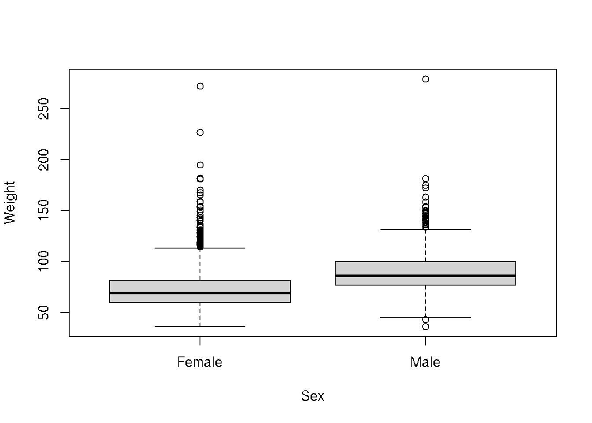
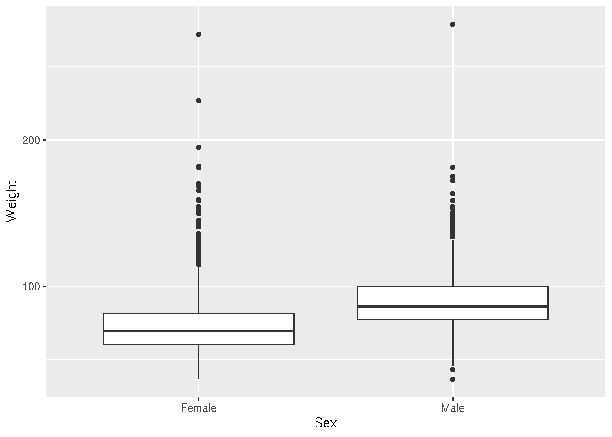
Let’s look at some density and scatterplots.
# base R
den_male <- density(brfss_2010_DF$Weight[brfss_2010_DF$Sex == "Male"], na.rm = TRUE)
den_female <- density(brfss_2010_DF$Weight[brfss_2010_DF$Sex == "Female"], na.rm = TRUE)
plot(den_male,
col = "skyblue", lwd = 2,
main = "Density of Weight by Sex",
xlab = "Weight")
lines(den_female,
col = "lightsalmon", lwd = 2)
legend("topright",
legend = c("Male", "Female"),
col = c("skyblue", "lightsalmon"), lwd = 2)# ggplot2
brfss_2010_tbl |>
ggplot() +
aes(x = Weight, color= Sex) +
geom_density()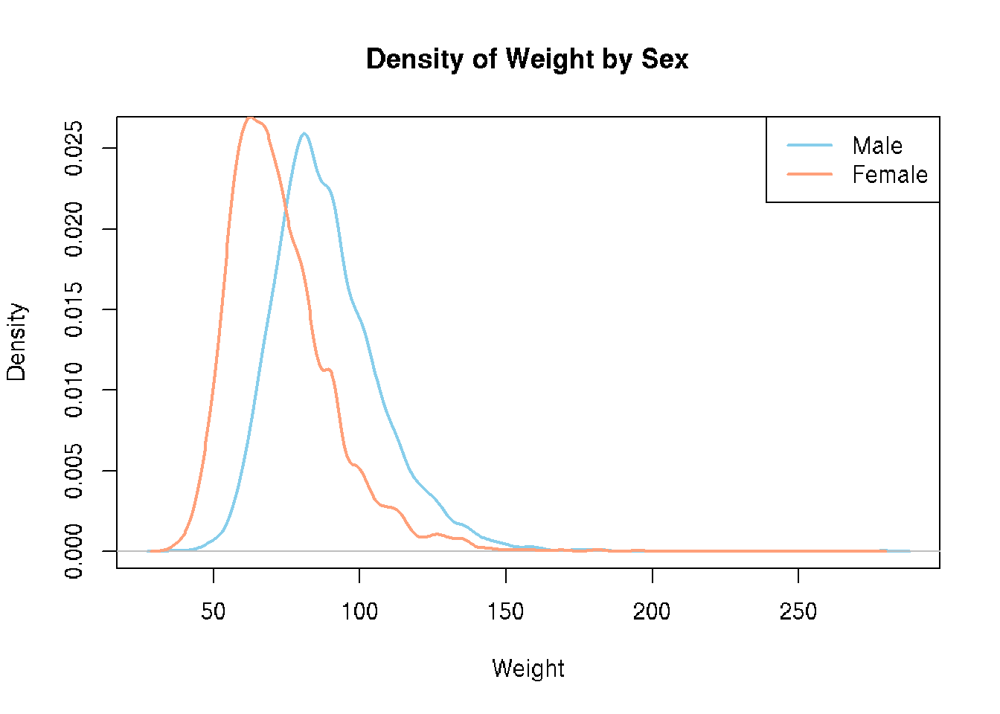
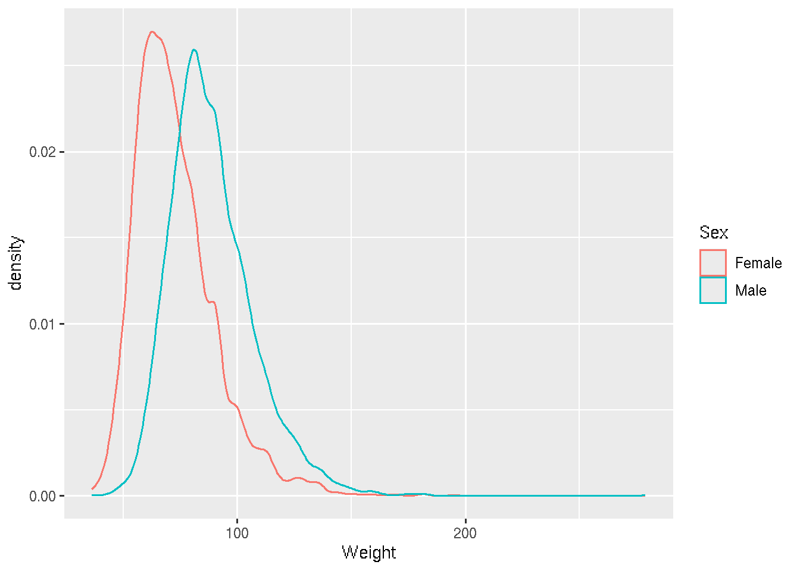
Presumably taller people are heavier than shorter people. Let’s examine this relationship.
# base R
plot(Weight ~ Height, brfss_2010_DF)# ggplot2
brfss_2010_tbl |>
ggplot() +
aes(x = Height, y = Weight) +
geom_point()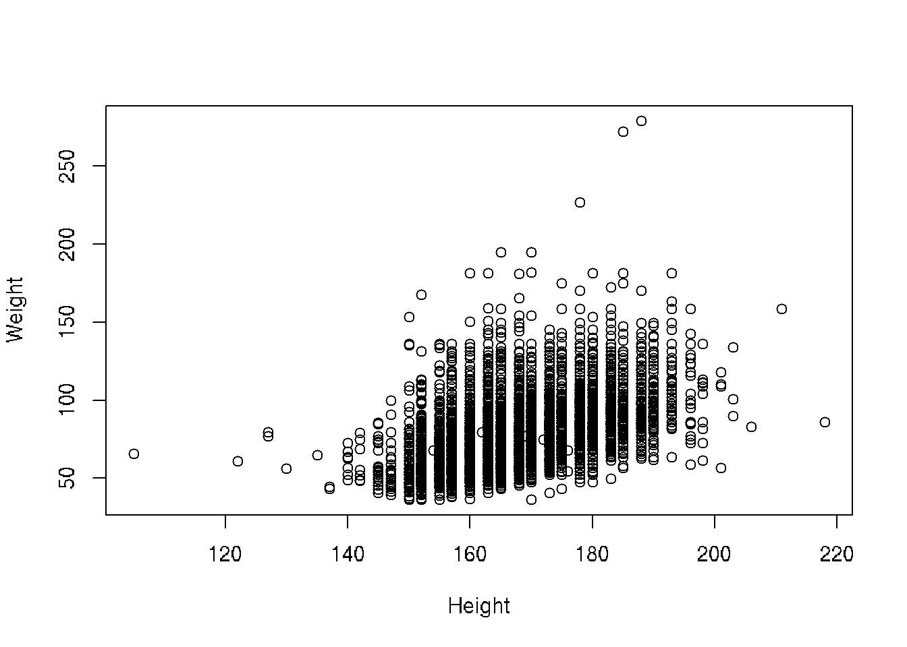
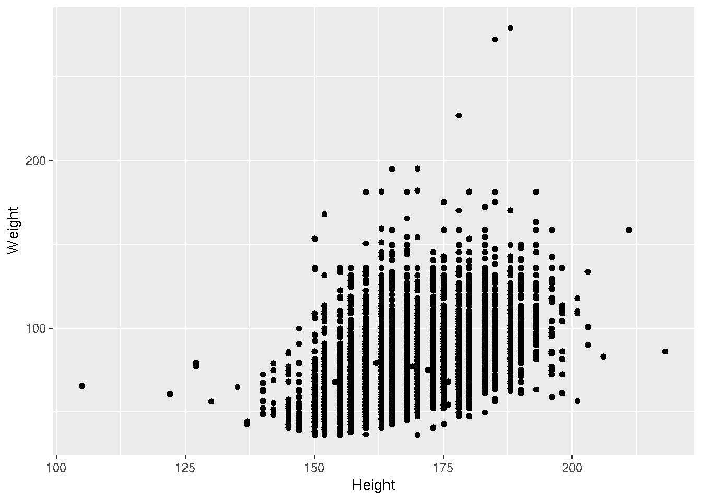
Let’s fit the linear regression
# base R
plot(Weight ~ Height, brfss_2010_DF)
fit <- lm(Weight ~ Height, brfss_2010_DF)
abline(fit, col="blue", lwd=2)# ggplot2
brfss_2010_tbl |>
ggplot() +
aes(x = Height, y = Weight) +
geom_point() +
geom_smooth(method = "lm")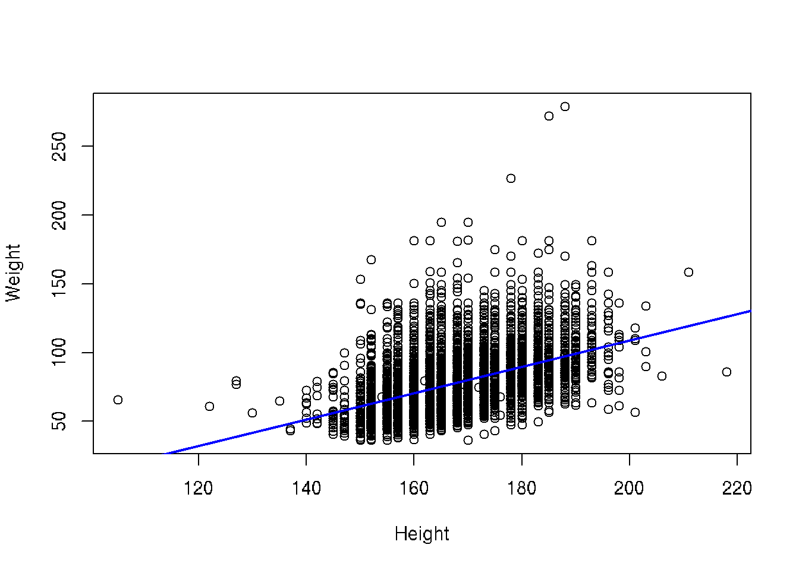
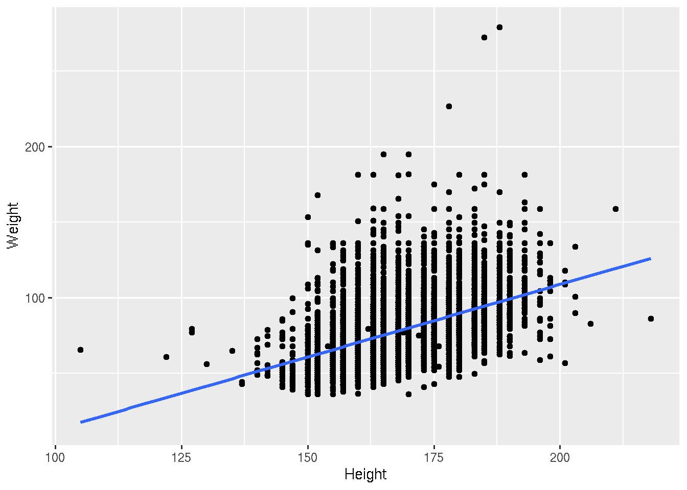
We saw that there could be a difference based on Sex. Let’s add color to the points
# base R
colors <- c("Female" = "lightsalmon", "Male" = "skyblue")
plot(Weight ~ Height, brfss_2010_DF,
col = colors[Sex], pch = 16)
for (sex in levels(brfss_2010_DF$Sex)) {
subset_data <- subset(brfss_2010_DF, Sex == sex)
fit <- lm(Weight ~ Height, data = subset_data)
abline(fit, col = colors[sex], lwd = 2)
}
legend("topleft", legend = levels(brfss_2010_DF$Sex),
col = colors, pch = 16, bty = "n")# ggplot2
brfss_2010_tbl |>
ggplot() +
aes(x = Height, y = Weight, color = Sex) +
geom_point() +
geom_smooth(method = "lm")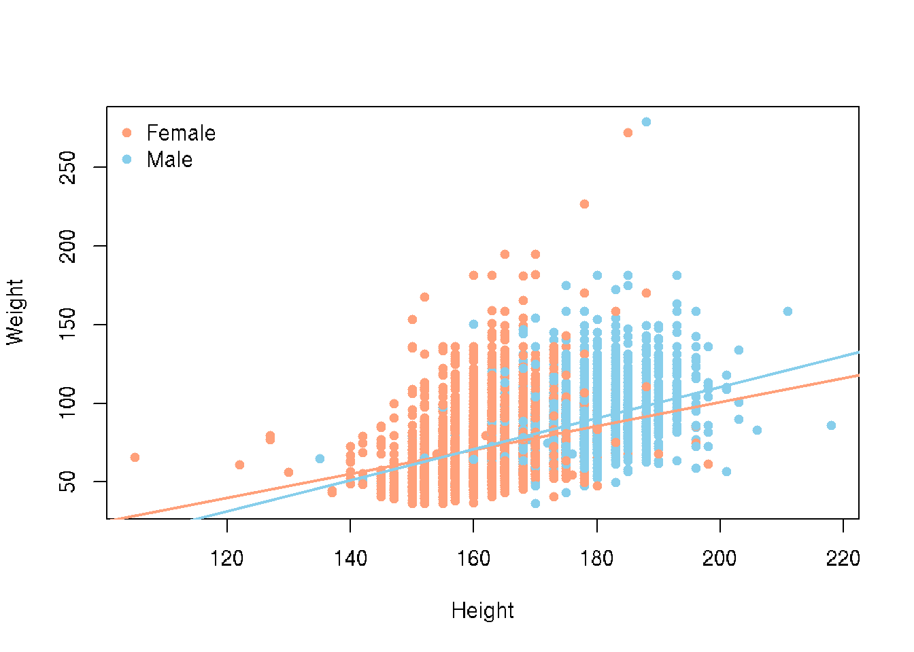
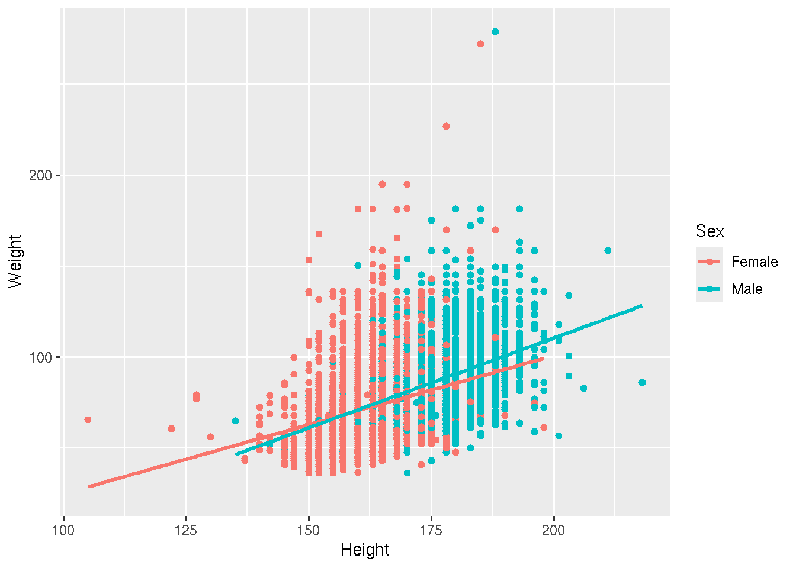
Let’s dig into some visualizations of the 2010 Males and recreate the histograms of Weight but we did not create that subset.
# base R
brfss_2010_Male <- subset(brfss_DF,
Year == 2010 & Sex == "Male")
hist(brfss_2010_Male$Weight)# ggplot2
brfss_2010_tbl |> filter(Sex == "Male") |>
ggplot() +
aes(x = Weight) +
geom_histogram(col = "white")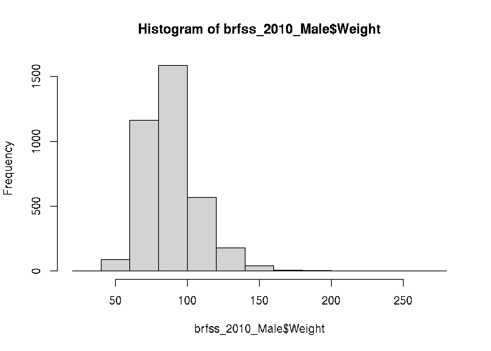
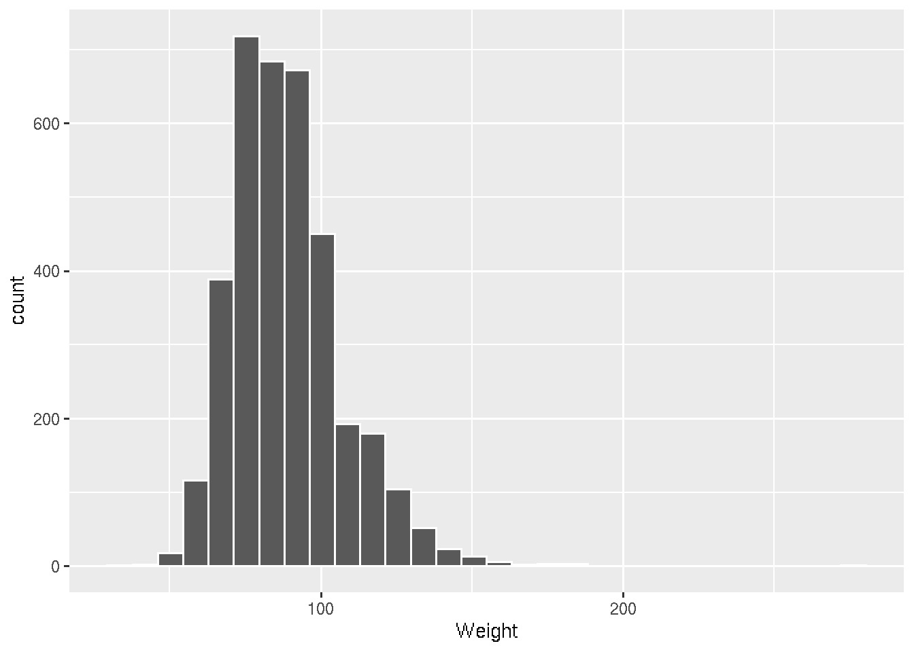
What if we took all the Males and looked to see if the relationship of Height and Weight changed between 1990 and 2010.
# base R
colors <- c("1990" = "lightsalmon","2010" = "skyblue")
plot(log10(Weight) ~ Height, brfss_male_DF,
col = colors[Year], pch = 16, ylab = "log10(Weight)")
for (yr in levels(brfss_male_DF$Year)) {
subset_data <- subset(brfss_male_DF, Year == yr)
fit <- lm(log10(Weight) ~ Height, data = subset_data)
abline(fit, col = colors[yr], lwd = 2)
}
legend("topleft", legend = levels(brfss_male_DF$Year),
col = colors, pch = 16, bty = "n")# ggplot2
ggplot(brfss_male_tbl) +
aes(x = Height, y = log10(Weight), color = Year) +
geom_point() +
geom_smooth(method = "lm") +
labs(title = "BRFSS Male Subset")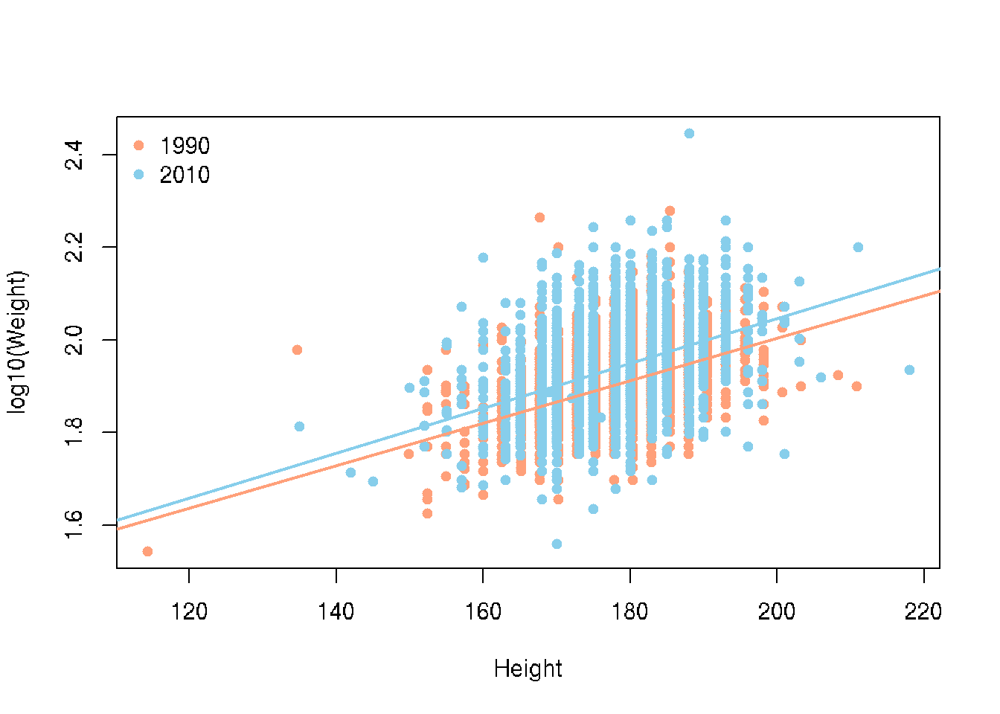
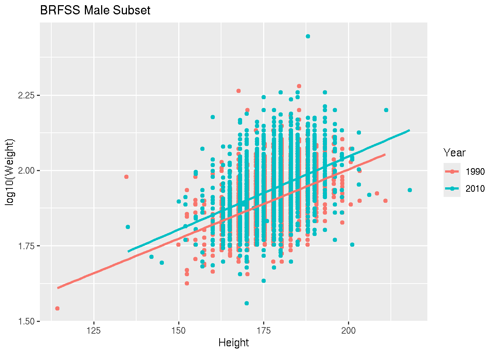
18.5 Summary
There are many visualization packages in R. You can explore the many options and what each has to offer to design high quality, customized plots for reporting.